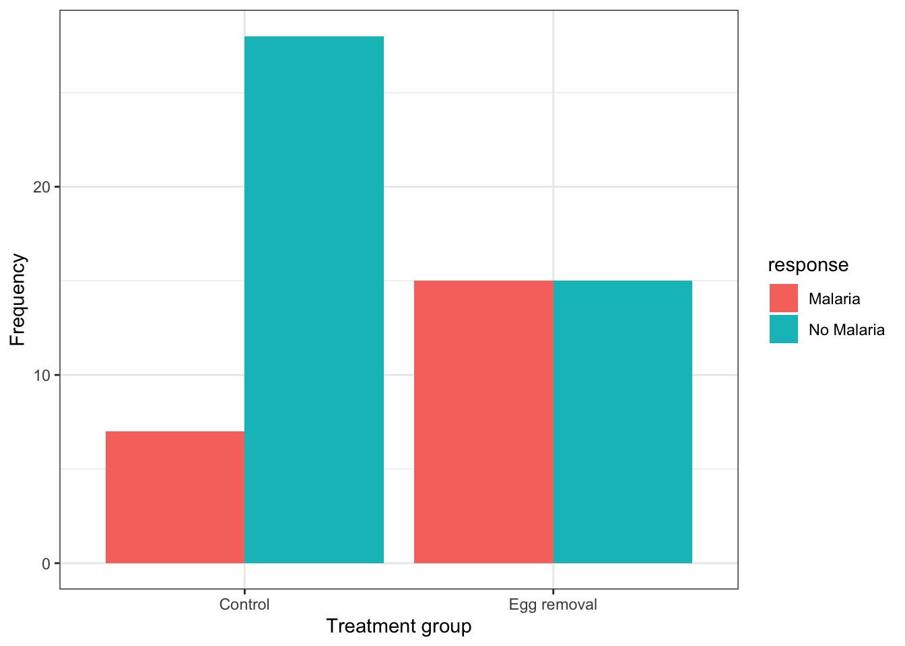

Visualizing association between two categorical variables
We’ll cover three ways to visualize associations between two categorical variables:
- a contingency table
- a grouped bar graph
- a mosaic plot
Constructing a contingency table
New tool
The tabyl function from the janitor package is useful for creating contingency tables, or more generally, cross-tabulating frequencies for multiple categorical variables.
You can check out more about the tabyl function at this vignette.
Let’s use the bird.malaria dataset for our demonstration.
If you got an overview of the dataset, as suggested as part of the activity in the preceding section, you would have seen that the bird.malaria tibble includes two categorical variables: treatment and response, each with 2 categories.
The dataset includes 65 rows. Each row corresponds to an individual (unique) bird. Thirty of the birds were randomly assigned to the “Control” treatment group, and 35 were randomly assigned to the “Egg removal” treatment group.
The response variable includes the categories “Malaria” and “No Malaria”, indicating whether the bird contracted Malaria after the treatment.
Our goal is to visualize the frequency of birds that fall into each of the four unique combinations of category:
- Control + No Malaria
- Control + Malaria
- Egg removal + No Malaria
- Egg removal + Malaria
More specifically, we are interested in comparing the incidence of malaria among the Control and Egg removal treatment groups. We’ll learn in a later tutorial how to conduct this comparison statistically.
Let’s provide the code, then explain after. We’ll again make use of the kable function from the knitr package to help present a nice table. So first we create the table (“bird.malaria.table”), then in a later code chunk we’ll output a nice version of the table using the kable function.
First create the basic contingency table:
bird.malaria.freq <- bird.malaria %>%
tabyl(treatment, response)Code explanation:
- the first line is telling R to assign any output from our commands to the object called “bird.malaria.freq”
- the first line is also telling R that we’re using the
bird.malariaobject as input to our subsequent functions, and the pipe (%>%) tells R there’s more to come. - the second line uses the
tabylfunction, and we provide it with the names of the variables from thebird.malariaobject that we want to use for tabulating frequencies. Here we provide the variable names “treatment”, and “response”
Let’s look at the table:
bird.malaria.freq## treatment Malaria No Malaria
## Control 7 28
## Egg removal 15 15It is typically a good idea to also include the row and column totals in a contingency table.
To do this, we use the adorn_totals function, from the janitor package, as follows, and we’ll create a new object called “bird.malaria.freq.totals”:
bird.malaria.freq.totals <- bird.malaria %>%
tabyl(treatment, response) %>%
adorn_totals(where = c("row", "col"))- the last line tells the
adorn_totalsfunction that we want to add the row and column totals to our table
Now let’s see what the table looks like before using the kable function. To do this, just provide the name of the object:
bird.malaria.freq.totals## treatment Malaria No Malaria Total
## Control 7 28 35
## Egg removal 15 15 30
## Total 22 43 65Now let’s use the kable function to improve the look, and add a table heading.
NOTE We are still finalizing the tutorial describing how to provide a Table heading.
bird.malaria.freq.totals %>%
kable(caption = "Contingency table showing the incidence of malaria in female great tits in relation to experimental treatment", booktabs = TRUE)| treatment | Malaria | No Malaria | Total |
|---|---|---|---|
| Control | 7 | 28 | 35 |
| Egg removal | 15 | 15 | 30 |
| Total | 22 | 43 | 65 |
Relative frequencies
Often it is useful to also present a contingency table that shows the relative frequencies. However, it’s important to know how to calculate those relative frequencies.
For instance, recall that in this malaria example, we are interested in comparing the incidence of malaria among the Control and Egg removal treatment groups. Thus, we should calculate the relative frequencies using the row totals. This will become clear when we show the table.
We can get relative frequencies, which are equivalent to proportions, using the adorn_percentages function (the function name is a misnomer, because we’re calculating proportions, not percentages!), and telling R to use the row totals for the calculations.
First create the new table object “bird.malaria.prop”:
bird.malaria.prop <- bird.malaria %>%
tabyl(treatment, response) %>%
adorn_percentages("row")Now present it using kable:
bird.malaria.prop %>%
kable(caption = "Contingency table showing the relative frequency of malaria in female great tits in relation to experimental treatment", booktabs = TRUE)| treatment | Malaria | No Malaria |
|---|---|---|
| Control | 0.2 | 0.8 |
| Egg removal | 0.5 | 0.5 |
Constructing a grouped bar graph
To construct a grouped bar graph, we first need wrangle (reformat) the data to be in the form of a frequency table.
Let’s revisit what the bird.malaria tibble looks like:
bird.malaria## # A tibble: 65 × 3
## bird treatment response
## <dbl> <chr> <chr>
## 1 1 Control Malaria
## 2 2 Control Malaria
## 3 3 Control Malaria
## 4 4 Control Malaria
## 5 5 Control Malaria
## 6 6 Control Malaria
## 7 7 Control Malaria
## 8 8 Egg removal Malaria
## 9 9 Egg removal Malaria
## 10 10 Egg removal Malaria
## # … with 55 more rowsTo wrangle this into the appropriate format, here’s the appropriate code:
bird.malaria.tidy <- bird.malaria %>%
group_by(treatment) %>%
count(response)This is similar to what you learned in a previous tutorial, but here we’ve added a new function!
New tool
The group_by function from the dplyr package enables one to apply a function to each category of a categorical variable. See more help using “?group_by”.
In the preceding code chunk, we’re tallying the observations in the two “treatment” variable categories, but also keeping track of which category of “response” the individual belongs to.
Let’s have a look at the result:
bird.malaria.tidy## # A tibble: 4 × 3
## # Groups: treatment [2]
## treatment response n
## <chr> <chr> <int>
## 1 Control Malaria 7
## 2 Control No Malaria 28
## 3 Egg removal Malaria 15
## 4 Egg removal No Malaria 15We now have what we need for a grouped bar chart, using the ggplot function:
ggplot(data = bird.malaria.tidy, aes(x = treatment, y = n, fill = response)) +
geom_bar(stat = "identity", position = position_dodge()) +
ylab("Frequency") +
xlab("Treatment group") +
theme_bw()
This code is similar to what we used previously to create a bar graph, but there are two key differences:
- in the first line within the
aesfunction, we include a new argumentfill = response, telling R to use different bar fill colours based on the categories in the “response” variable.
- in the second line, we provide a new argument to the
geom_barfunction:position = position_dodge(), which tells R to use separate bars for each category of the “fill” variable (if we did not include this argument, we’d get a “stacked bar graph” instead)
Note It is best practice to use the response variable as the “fill” variable in a grouped bar graph, as we have done in the malaria example.
If we wished to provide an appropriate figure heading, this would be the code:

Figure 11: Example code chunk for producing a good grouped bar graph
And the result:
ggplot(data = bird.malaria.tidy, aes(x = treatment, y = n, fill = response)) +
geom_bar(stat = "identity", position = position_dodge()) +
ylab("Frequency") +
xlab("Treatment group") +
theme_bw()
Figure 12: Grouped bar graph showing the incidence of malaria in female great tits in relation to control (N = 35) and Egg-removal (N = 30) treatment groups.
Constructing a mosaic plot
An alternative and often more effective way to visualize the association between two categorical variables is a mosaic plot.
For this we use the geom_mosaic function, from the ggmosaic package, in conjunction with the ggplot function.
For more information about the ggmosaic package, see this vignette.
For the geom_mosaic function, we actually use the original (raw) bird.malaria tibble, which has a row for every observation (i.e. it isn’t summarized first into a frequency table).
Here’s the code, and we’ll explain after:
ggplot(data = bird.malaria) +
geom_mosaic(aes(x = product(treatment), fill = response)) +
xlab("Treatment group") +
ylab("Relative frequency")
In the code chunk above we see one key difference from previous uses of the ggplot function is that the aes function is not provided in the arguments to ggplot in the first line, but is instead provided to the arguments of the geom_mosaic function on the second line.
We also see product(treatment), which is difficult to explain, so suffice it to say that it’s telling the geom_mosaic function to calculate relative frequencies based on the “treatment” variable, and in conjunction with the fill variable “response”.
Note that in the mosaic plot there are no number values provided on the y-axis. This is OK: as you can see, the difference in the relative frequency of malaria incidence across the treatment groups is obvious, and that’s the goal of this type of graph, i.e. to visualize any differences in relative frequency across groups. One doesn’t need y-axis numbers because it’s the comparison across groups that is the focus. Nevertheless, the y-axis limits would be zero and one, so one can “eyeball” the relative frequencies for each group. We’ll learn about interpreting mosaic plots soon.
- Using the
penguinsdataset, try creating a mosaic plot for comparing the relative frequency of penguins belonging to the three different “species” across the three different islands (variable “island”).
Interpreting mosaic plots
Let’s provide the mosaic plot again, and this time we’ll provide an appropriate figure heading in the chunk header, as we learned previously:
ggplot(data = bird.malaria) +
geom_mosaic(aes(x = product(treatment), fill = response)) +
xlab("Treatment group") +
ylab("Relative frequency")
Figure 13: Relative frequency of the incidence of malaria in female great tits in relation to control (N = 35) and Egg-removal (N = 30) treatment groups.
Here’s the code:

Figure 14: Example code chunk for producing a good mosaic plot
When interpreting a mosaic plot, the key is to look how the relative frequency of the categories of the response variable - denoted by the “fill” colours - varies across the explanatory variable, which is arranged on the x-axis.
For example, in the malaria example above:
“The mosaic plot shows that the incidence (or relative frequency) of malaria is comparatively greater among birds in the egg removal treatment group compared to the control group. Only about 20% of birds in the control group contracted malaria, whereas 50% of the birds in the the egg-removal group contracted malaria.”